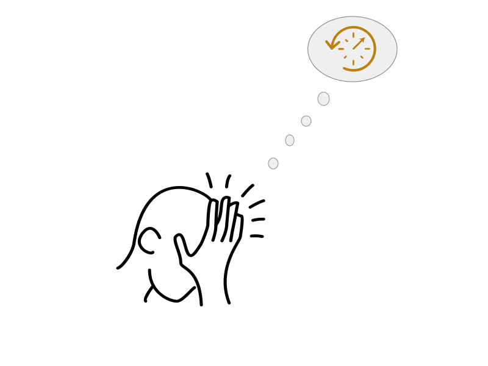

Publishing API documentation
By Tom Johnson / @tomjohnson
idratherbewriting.com
Slides available at
idratherbewriting.com/publishing-api-documentation/
What I'll talk about
- What makes dev doc unique
- Dev doc design patterns
- Docs-as-code characteristics
- Markdown and version control
- REST APIs and OpenAPI spec
- The jungle of publishing tools
- Lessons learned
Where to find more information

What makes publishing developer docs unique?
- Developer contributors
- API structure
- Demo requests on page
- Docs are product interface
Survey of API doc sites
- Let's begin descriptively
- Pick 3 from 100 API doc sites
- Identify common characteristics
Design patterns with API doc sites
- Structure and templates
- Website platform
- Abundant code samples
- Lengthy pages
- API Interactivity
Developers treat docs as code
- Markdown or rST
- Static site generator
- IDE-like text editor
- Git to manage content
- Build from server
More about Markdown
- Readable as code
- Compatible with version control
- For semantics, define in YAML frontmatter
- Supplement with SSG scripting languages
- Lack of standards creates tool lock-in
Version control systems
- Ingenious way to collaborate
- Helps you understand engineering workflows
- More of a learning curve than the SSG
- The model scales
Reference docs for APIs
- Common templates
- OpenAPI specification
- Swagger UI or other
- Integrate reference with non-reference docs
Publishing tools for developer docs
4 categories of tools
- Static site generators
- Hosting and deployment options
- Online CMSs (mostly flat-file)
- Tools to render OpenAPI spec
1. Static site generators
Speed • Format • Community
2. Hosting and deployment options
Continuous delivery • Integration
3. Online CMSs (mostly flat-file)
Continuous delivery • Integration • Authentication
4. Tools to render OpenAPI spec
Integration • Collaboration • Versioning
Which tool to choose for API docs?
- 1. Define your requirements
- 2. Choose your priorities
- 3. Consider the time you want to spend on tools
- 4. Hope that you don't sink months into the wrong tool
Current setup at work
- Jekyll + custom theme
- Use existing internal Git infrastructure
- Custom-built publishing pipeline
- Builds output, then ingests HTML into S3
- Server requests pull matching files from S3 store and insert into template
Lessons learned
My experience switching to docs-as-code
- Mostly love it, would never go back.
- Continuous deployment with Git is the killer feature
- Love the control and flexibility of open source
- Takes way more time than you think
- No good solution for search or translation
Working with engineers on implementation
- Engineering involvement required for continuous deployment
- Engineers understand infrastructure but not SSGs
- 1-2 repos max, feeding into same publishing pipeline
- 3rd-party hosting ideal but difficult with Info Sec
Confusing landscape, but here's what I know
- There's a tradeoff between control/flexibility versus time/effort/responsibility
- Describe REST with OpenAPI spec
- Build continously from the server
- Manage content through Git
- Seek 3rd-party solutions when possible
- Don't spend infinity in the rabbit hole of tools
Questions?

The end

Tom Johnson
— idratherbewriting.com
— @tomjohnson
— tomjoht@gmail.com